blog
24/09/2024
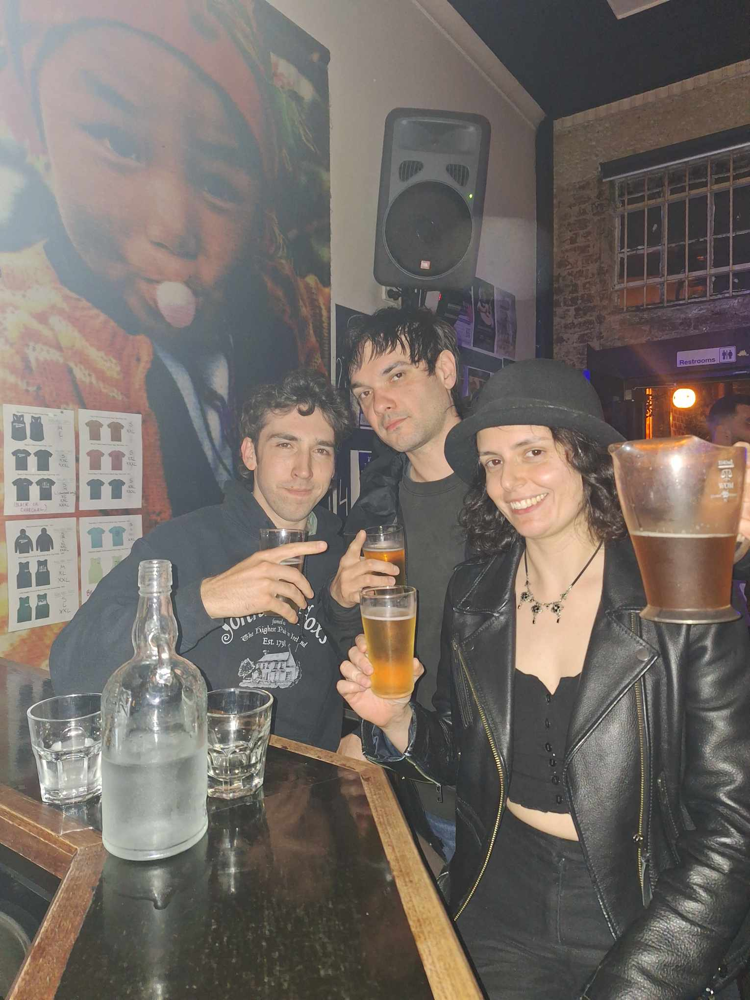
Smug faces after winning the music round @ pub trivia.
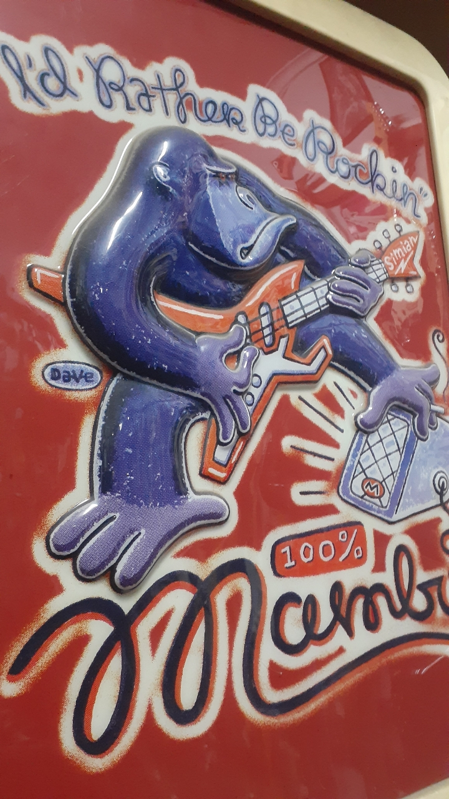
Visit to swopshop for a vocal delay. Digitech Echo Plus sounded amazing.
♫⋆
ᓚᘏᗢ
02/09/2024
Mel drinks x9 Chai Lattes today.
New tune brought to you by chai number nine. Demo chords below, made without any chai.
Krist, originally planning a bosa nova beat, might be appropriating a specific Radiohead song. Mel is working out the bass and writing lyrics. I was aiming for dirty, droney, emo, Stereolab, and imagining youre in those mbv drums that are being sucked back through a worm hole.
ᓚᘏᗢ
26/08/2024
Jack says he sees us more than his mum
❤
3phase rehearsals
ᓚᘏᗢ
25/08/2024
M'S CHAI REVIEWS
Melbourne Polytechnic Cafeteria Chai Latte
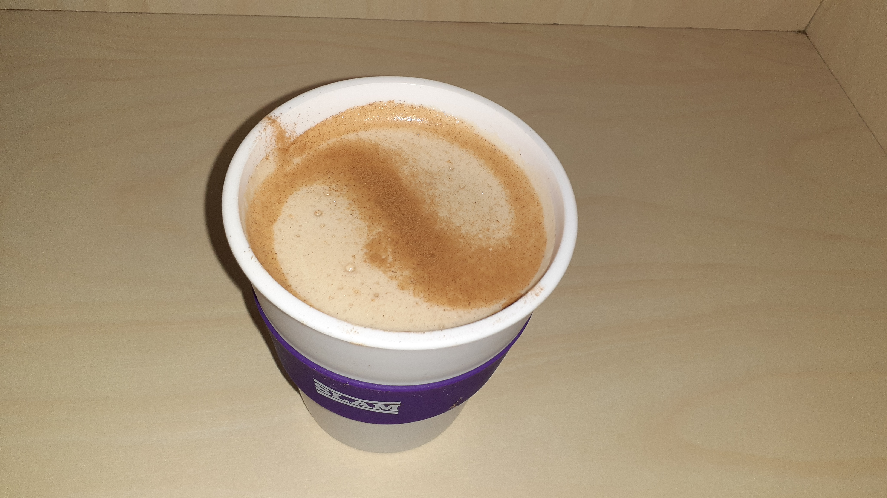In my last review I said my next review would be for New Day Rising. Welp, I lied. This chai latte is comin' at ya from Melbourne Polytechnic's Preston campus (at which I am currently studying a Diploma of Business)
Flavour: I asked them if it was vegan and they said yes but I swear I can taste honey? It could be a honey subsitute but whatever it is I can't say I love it. 2/5.
Price: A small size, with the keep cup discount is $4.20. (lol) I reckon this is pretty good 4/5
Experience: No one hangs around in the seating area, so if you only look at that part of the cafeteria, it's kinda like a liminal space, which I dig. 3/5
Next review: Contraband at Preston Market.
ᓚᘏᗢ
22/08/2024
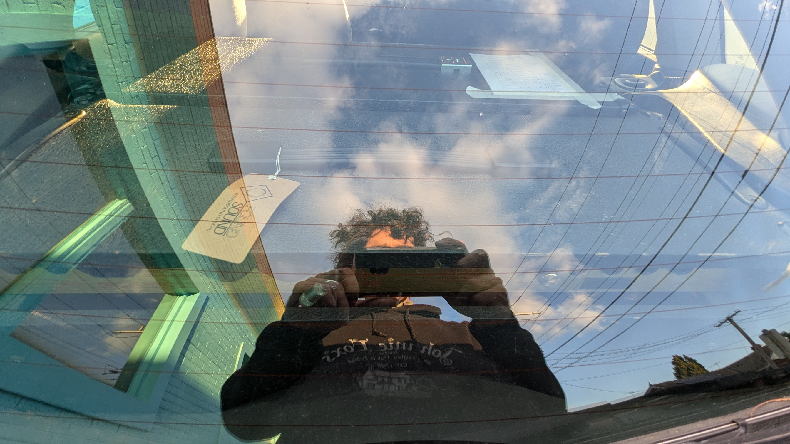
In a week of tax returns, payment plans, and gear consignments, purrers secures an investment in rock and roll manifest.
A Marshall 4212 combo now joins its twin - Marshall 5312 reverb twin - in the back of the ford focus. 2004's TopGear Car of the Year.
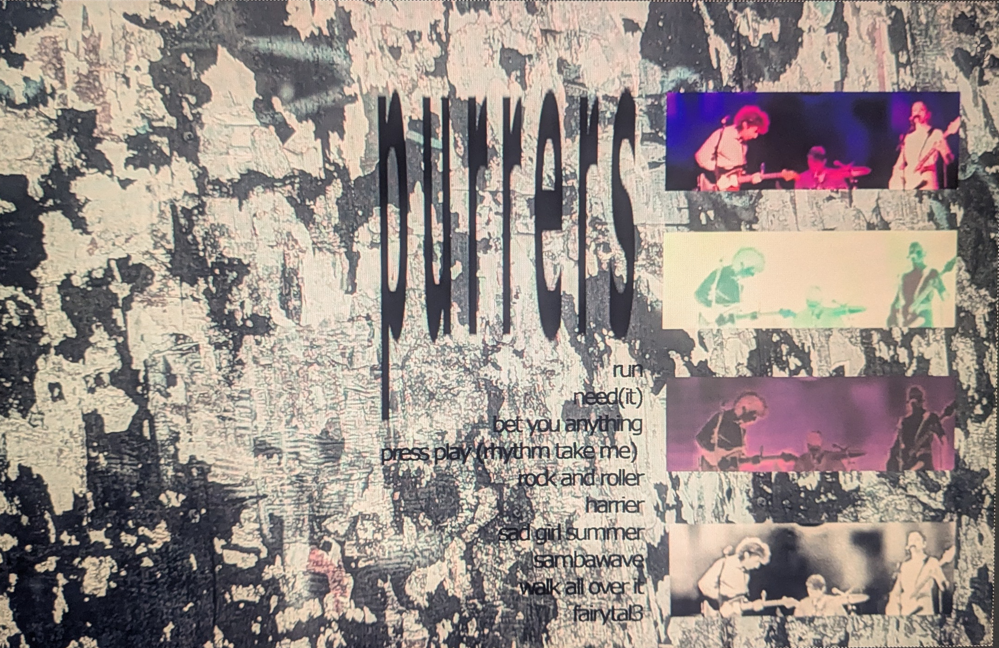
Gig at the evelyn with SelectAll and Parasite.
SelectAll Taylor plays in Milk Punch with Kris and Raf, NuGaze with maybe some pop-punk. This was a residency they were doing at the evelyn. Cuddle had played the week before. Thanks very much for having us on!
A very kindly took some photos for us on the night.
The quality after downloading, uploading, and downloading again was so bad though, that the last step became an impromptu hour of runaway "design".
Setlist included for diehard fans only. Fairytal3 was endorsed later outside by Milly.
ᓚᘏᗢ
17/08/2024
Garage Sale + Local Authority @ the Bergy Bandroom.
I'd bought a Garage Sale CD sometime ago, which still hasent arrived yet @sore.horse.
For no reason it also took a long time to catch a show, this might have exagerated expectations to see them for real, but the band delivered! Classic quiet loud, noisy, delicate, slow core from recent american yesteryear. Without being reductive.
They rock.
I reference america because, after one of the many long applauses, the band seemed suprised, saying they didn't know people here were into this kind of music (something to that effect). As if the internet didn't exist. And 90's emo isn't the trendiest thing right now.
That just came off as endearing, because again, they rock.
Came away with a Local Authority vinyl, I remember Raf saying they're more slowdive / alt rock. I can't remember specifics, this being typed up weeks later. 4 piece and were very impressive, songs seemed finished, polished, album for sale, merch, interstate travel. All leaving a great impression
Kris managed to plug us / force them to write our name in their phone. Hoping we get to play the show with them next time hehe.
ᓚᘏᗢ
25/07/24
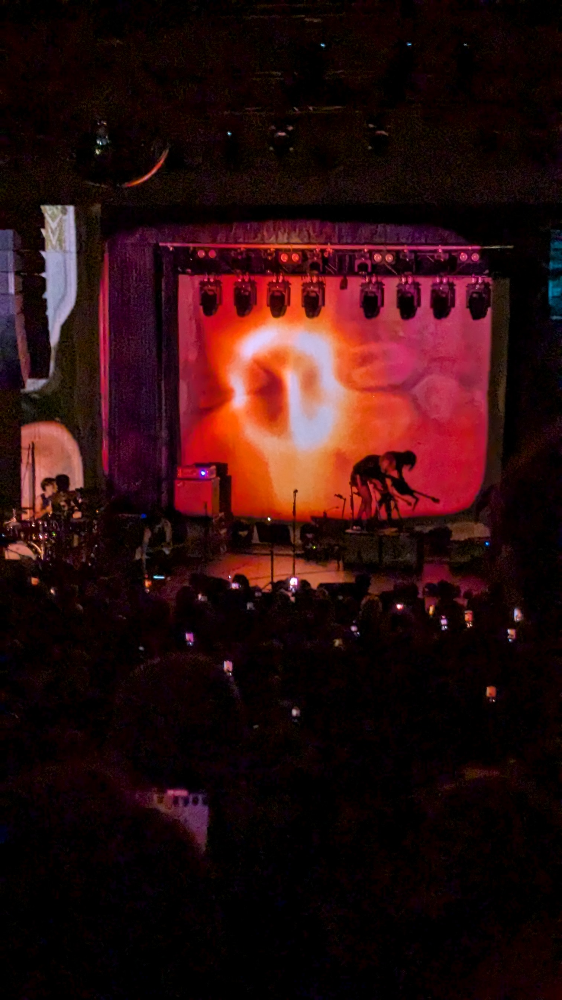
Kim Gordon (The Collective Tour) - Live @ Northcote Theatre
phone recording
LINK❤
13/07/2024
.jpg)
gig at oldbar with general goods and goodwin.band on a call / prayer / tuesday.
Lovely to meet both bands!
Also cool to be on the same board as Body Maintenance (IG) a real inspiration.
That gig with Screensaver Music was a goodie.
.jpg)
graffito out the back. really clever integration of two absolute classics.
ᓚᘏᗢ
16/06/2024
"It's called culture you swines"

Preston Symphony Orchestra: Dancing Across Continents
Moncayo - Huapango
Villa Lobos - Bachianas Brasileiras No.4
Conductor: Carlos del Cueto
phone recording
->here<-
ᓚᘏᗢ
13/06/2024
The day after we played at the Penny Black, we played at the Last Chance Rock and Roll Bar. I am writing about it now, nearly two weeks later, because I am bored.
Some funny things that happened: 1. Our set time was 4.20
2. The band we played with, Drenched, were from Tasmania!! Well i'll be...I thought Tasmania was just a myth.
3. We all ordered burgers from the Last Chance kitchen after the show. Mine was a Hawaiian burger (it had a slice of pineapple in it and was delicious!) Dave struggled with his burger, im not sure why but I think it may have been due to jetlag. I believe Kris' burger was called The Big Kahuna
Our next show is at the Gem Bar on the 15th June with Tam Vantage
ᓚᘏᗢ
31/05/2024
Playing at the PennyBlack with Sorry, Dave and SAN. A very kind man said the show was urethral.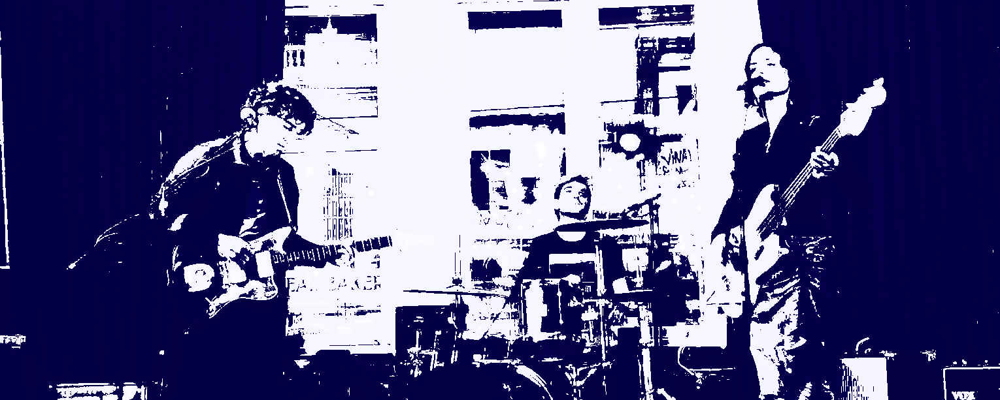
Phone pic turned 00's - sticker pack - punk - emo - core, courtesy of A.ᓚᘏᗢ
01/05/2024
M'S CHAI REVIEWS
Original Fruit and Nut Chai Tea

This tea comes from a wonderful little stall at the Preston Market called Original Fruit and Nut. As the name suggests, they sell dried fruits and nuts (and so much more!) by the kilo.
Flavour: This is my go-to tea for home drinking. I have four cups of it every day! In the mix, there are visible bits of cinnamon sticks, cloves, star anise, and other stuff I don't recognise but I'm sure is good stuff. A delight for the senses. 5/5
Price: $7.99 for a 200g packet. Look honestly I don't know much about economics and generally believe that almost everything is overpriced. 3/5
Experience: I find Preston Market a bit hectic. I've been going there every Saturday for the past year or so and still get disorented. Maybe that's just me though. 3/5
Next review: I'm thinking New Day Rising.
ᓚᘏᗢ
21/04/2024
r.i.p our elk fsb-45 combo amp
Recording with the volume up, capacitors failed and the elk died. Even the recently replaced speaker was lost.
"Prohibitively expensive" T. Lovell.
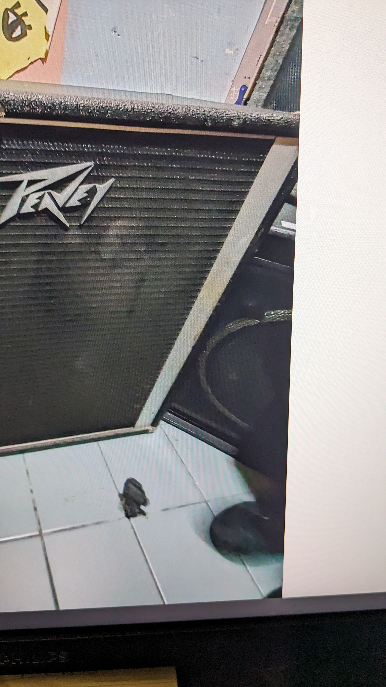My shoe (above) captured in an un-related swopshop ad while buying a slightly less geriatric replacement amp.
ᓚᘏᗢ
07/04/2024
gig at Mamma Chen's. Hungrily, we chose to commit to eating at an under-staffed pizza place across town. We missed Mayzie play and were late to set-up.
Ambur naarm's drummer was also in a hurry, trying to pack up mid-song in an effort to get back to geelong at a reasonable hour.
The band pleaded for one more, it was funny to watch them packing up their cymbals again while the others played the final outro.
Vital Sparks played very well, and sounded great. Another moment of professional envy. I do believe all saxophones should be replaced with cooler guitars.
Thanks again Mayzie, check out her latest efforts ->peter - you, sad we missed that one.
Salt Tapes iii from Cerine Ruby->HERE<- & ^^^
ᓚᘏᗢ
01/04/2024
NSC w/ Noisy Neighbours, Thanks for the video R!
Instagram->HERE<-
Although not feeling great about our first couple of shows making it online.
ᓚᘏᗢ
31/03/2024
♫⋆until the end - threephase
Kris has linked 3x private soundcloud tracks in the last couple of years. One of which we've learnt and practice sometimes.
ᓚᘏᗢ
23/03/2024

might not work out
ᓚᘏᗢ
14/03/2024
M'S CHAI REVIEWS
Three Phase Soy Chai Latte
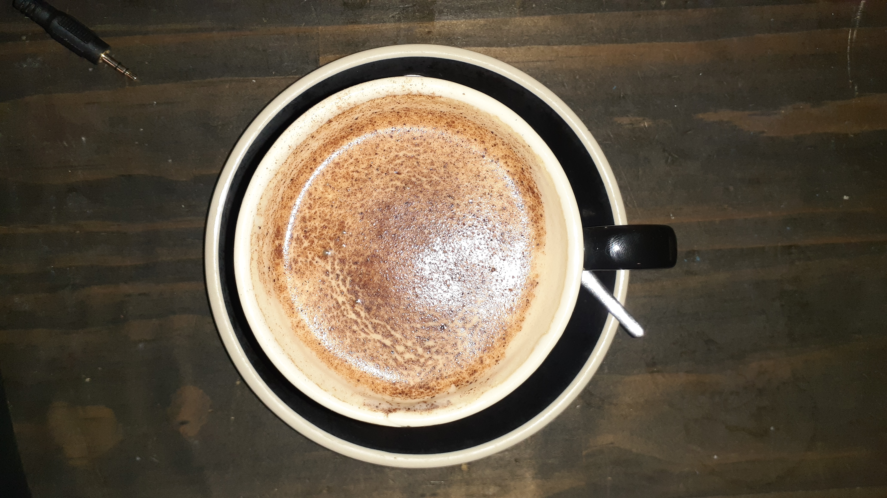Let me start the review by saying that Three Phase Studios is where we normally rehearse and the fact that they have a proper bar/cafe on site is probably one of the reasons we rehearse there.
Saves us having to go up the road for a drink or snack.
Flavour: decent chai, I'll give it 4/5
Price: $5.60 for a mug or $4.60 for a cup. It's competitive I suppose 3/5
Experience: Depends who's making it. The barista will usually be either J or T (don't wanna mention any names!!) J is maybe a little ham-fisted with the steaming wand and introduces too much air, so it ends up being about half a mug of foam.
T's are good though and everyone who works there is so lovely I'll just say 4/5
Next review: Dunno, hardly anywhere has a vegan chai blend :(
ᓚᘏᗢ
03/03/2024
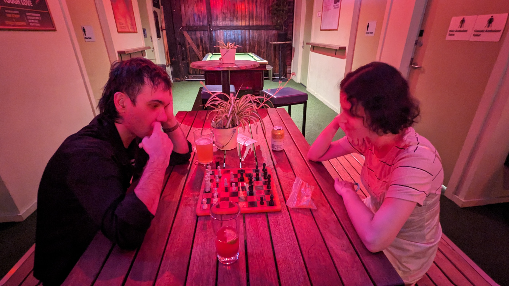
The Bergy Seltzer; familiar faces from RMIT's Sound Production course -> Thomasin <- dreamy folk 3-piece, soft-rock with hard strumming? Eli (bass) had even attended a class without being a student..
With just one drive pedal, some parts of the set sounded very shoegazey using an acoustic guitar into a fender DRRI.
The sound person was not sharing any enthusiasm to use 3x guitar amps that night, but did share their liking for Cameron's aluminium Pearl snare.
We played two new instrumental songs and Kris beat Mel in an exponentially exciting game of chess after the show.
ᓚᘏᗢ
02/02/2024
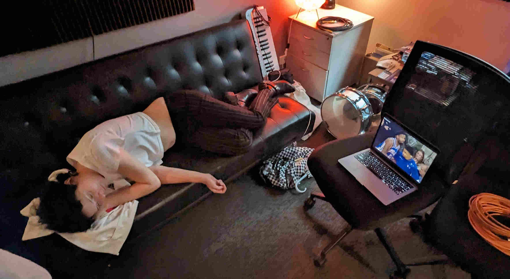studio time
ᓚᘏᗢ
23/01/24
We had our gig at Bar Open a few days ago. Here are some things that happened:
-The person who filmed us at Old Bar and uploaded the footage to Youtube was there again, filming and uploading! ♫⋆
-I made a joke about how Bar Open was one of the first places I went to when I turned 18..two years ago. I thought this was pretty funny but nobody else did :( (except Kris)
-There's a big old mirror mounted on the roof above the stage and it was fun watching the tops of the other bands' heads while they were playing.
Speaking of the other bands, thank you so much to Oceans for having us and Kudos to Ally Mac for having such a lovely country-esque sound!
Our next show is at the Bergy front bar on the 29th Feb. (wow it's a leap year)
ᓚᘏᗢ
14/01/2024
The next gig turned out to be at Old Bar and not Bar Open.
Town Ace ♫⋆ were on first and minus a guitarist. Having never heard them before, by the end of the show you questioned the need for lead.
Their chords and guitar sounds came across as intelligent but also casual, like Trevor Wong(?) but in a cool band, more for the discerning - slacker - everyman.
Noticeably, everyone could play. Silver Jews cover. Came away with a cassette;
Kiss Heaps ♫⋆ were a duo that drew you in with non-threatening fluffy natural fibers.
An eerie vulnerable world building singer songwriter, paired with a long-haired emotional craftsman, both creating a set full of melancholic atmospheres.
The guitarist wwould slowly twist up, physically effected, delivering tunes between id and ego; while the craftsman hunkered down amongst their mess of instruments on stage, keeping busy.
The kind of set you stumble across on youtube around midnight and hunker down with. Wondering how they looped?/sampled? this static, crackly, hum-y accompanyment at times, we later learned it was simply a bad guitar cable. Perfect.
Purrers, D, being told to turn down 4 times by the 3rd song. Made worse by the fact the set made it to youtube (if your in this deep: please forgive and forget ♫⋆).
Vowes to connect to rehearsal/bedroom energy - colour code - live sound communication - etc.
Cold Regards -FB- were a match up that worked. Constantly tasteful guitar licks - the cool kind. Casio rhythms and reverb heavy keys. I really enjoyed when things got dark and droney.
The Casio keyboard transformed and thoughts of any potential twee 80's indie paisley jangle were gone. Left thinking about JAMC and turning up the PA.
ᓚᘏᗢ
09/01/2024
M'S CHAI REVIEWS
Origin Chai

I bought this sticky chai from the supermarket (woolworth's). The stickiness comes from coconut nectar, making it vegan. I appreciate that. I liked the aroma and the flavour was pretty much spot on. Bit expensive though.
Flavour: spicy and fruity. I'll give it a 4/5
Price: It's a small packet (100g or 8 serves) and it cost 9 dollars. That's more than a dollar per serve! At the rate I drink chai it won't last me a week. 2/5
Experience: Well, I didn't have to talk to anyone to get this chai and I do enjoy the process of brewing it myself. 4/5
Next review: Three Phase chai
ᓚᘏᗢ
20/11/2023
♫⋆demo - d#gdgbd
X05300, x05550
400000, 004000, 005000, 002000
ᓚᘏᗢ
18/11/2023
Our show at Cafe Gummo was last night and we all had so much fun. We even got some very nice feedback from some of the punters who weren't our friends! (but they are now) One person said "you're the best shoegaze band in Melbourne." Nice!
Some funny things that happened:
- -The door handle for the green room door was missing so if we wanted to open it we had to stick a spoon in the hole where there should have been a handle and twist the spoon around a little bit
- -I just straight up forgot how to play some of the songs. Oops!
- -We got burgers from Kustom Burgers and while they were delicious they were kinda sloppy so more of the filling fell out than stayed in.
Thank you so much Cafe Gummo for having us. Our next gig is Jan 19th next year with Oceans at BAR OPEN DEFINITELY BAR OPEN THE ONE ON BRUNSWICK ST
(I've definitely been telling people it's at Old Bar; I'm always getting the two of them confused!)
ᓚᘏᗢ
10/11/2023
♫⋆demo - d#gdgbd
X05477, X03255, X05477, X03255
879000, 099070, 099080, 055700
X05470, 033500, X05470, 033500
X33010, x1010080, x55030
X88060, x33010, x1010080
ᓚᘏᗢ
08/11/2023
We played our very first show 4 days ago! If you missed this historic event here are some funny things that happened:
- Mope Burn played her DJ set before all the bands. (Everyone thought this was weird except her)
- Kris put some foam thingies called "Booty Shakers" over the feet of his floor tom, I guess to stop it from moving around??
- The engineer turned Dave's guitar amp volume down and then Dave just went and turned it right back up. This happened so many times it ended up being like an epic duel between Dave and the engineer. Who won? I dunno.
Seriously though thanks so much to Brunswick Artists' Bar for having us and Morphemme for playing with us. They are a hard act to follow!!
Our next show is at Cafe Gummo in Thornbury on the 17th November this year
ᓚᘏᗢ
03/11/2023
♫⋆last practice before our first show @ brunswick artists bar nov 04 2023
shinewithyou
ᓚᘏᗢ
01/11/2023
press play (rhythm take me)
standard
xx0250, xx0420, xx0020, xx0030
x0119109, x01191012, x01191014, x0119109
x07787, x07789, x077810, x07789
x00250, x00670, x00690
ᓚᘏᗢ